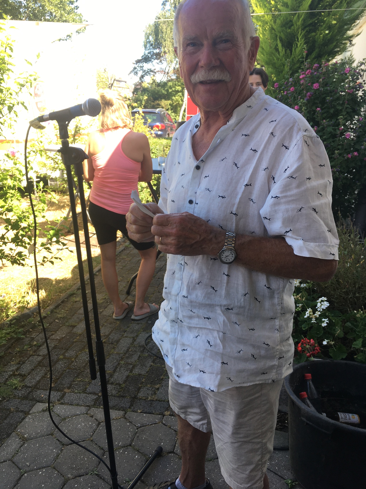
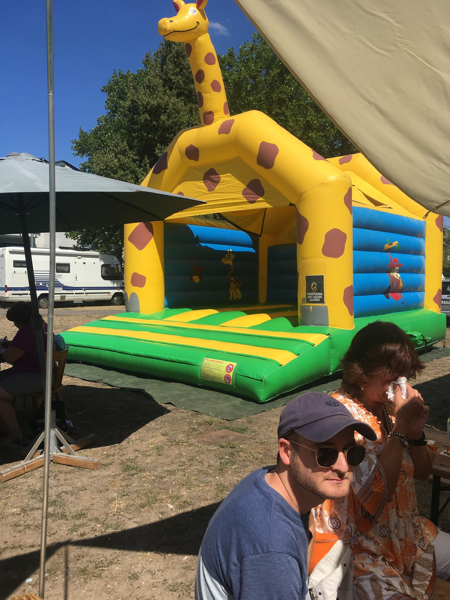
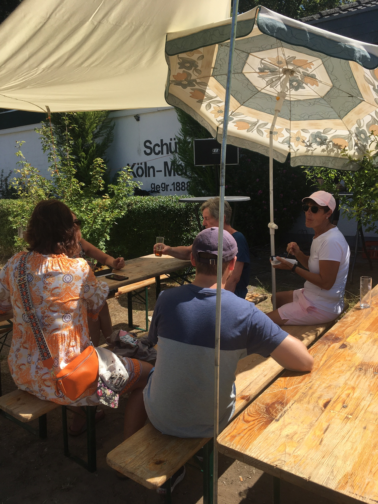
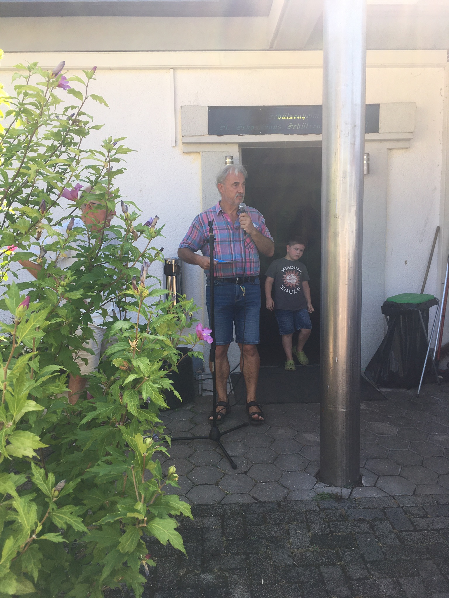
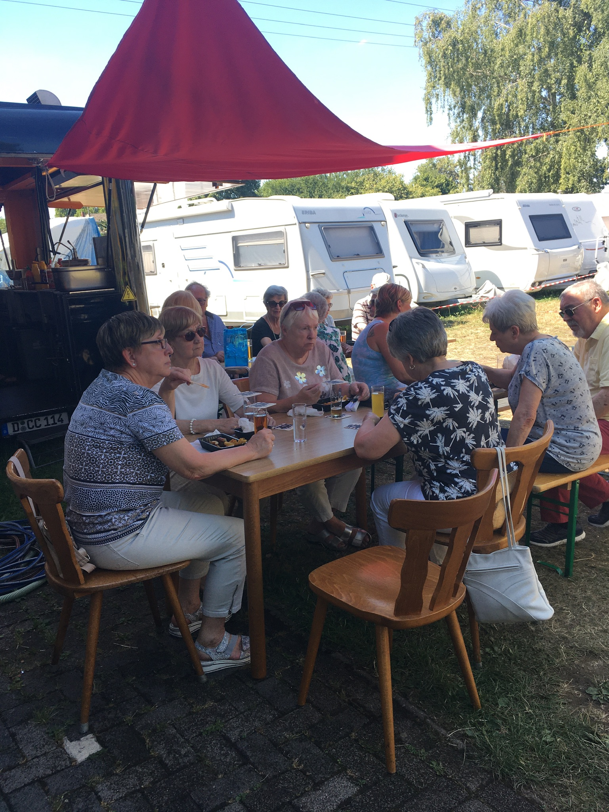
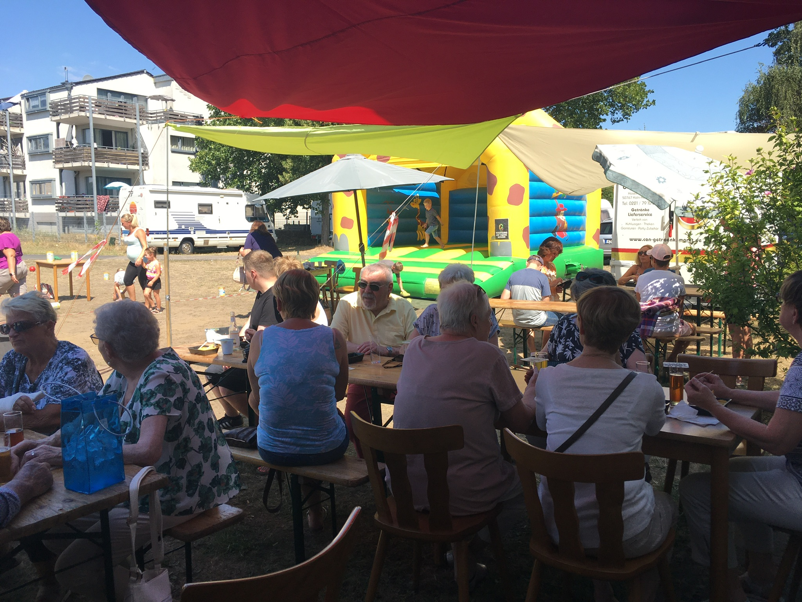
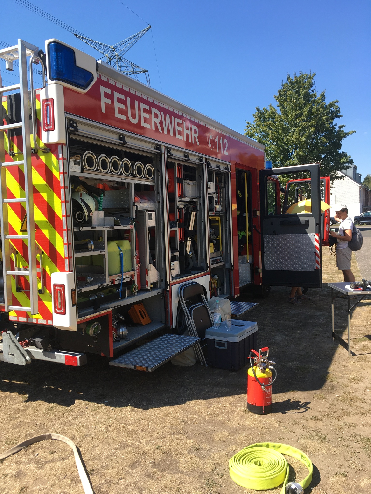
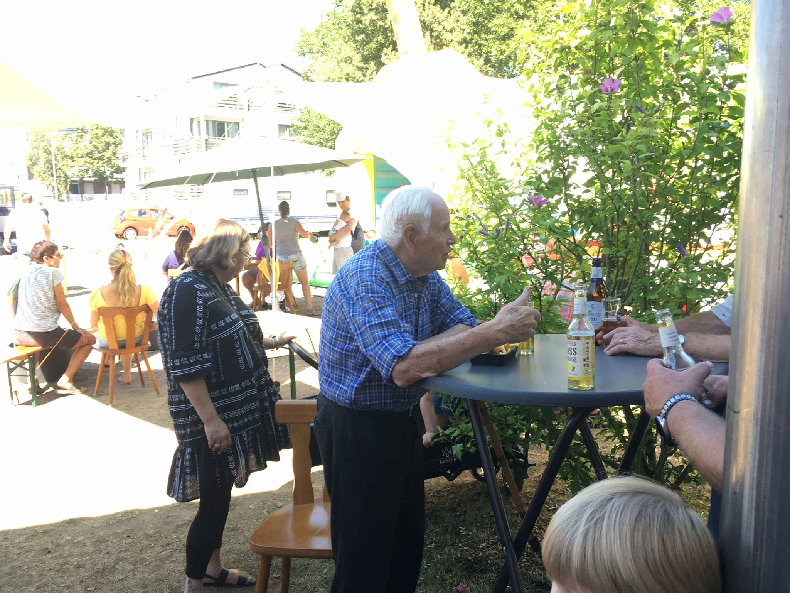
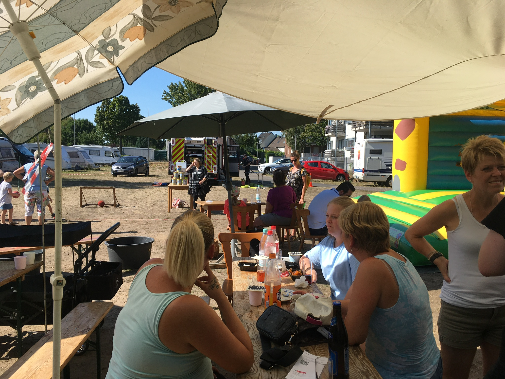
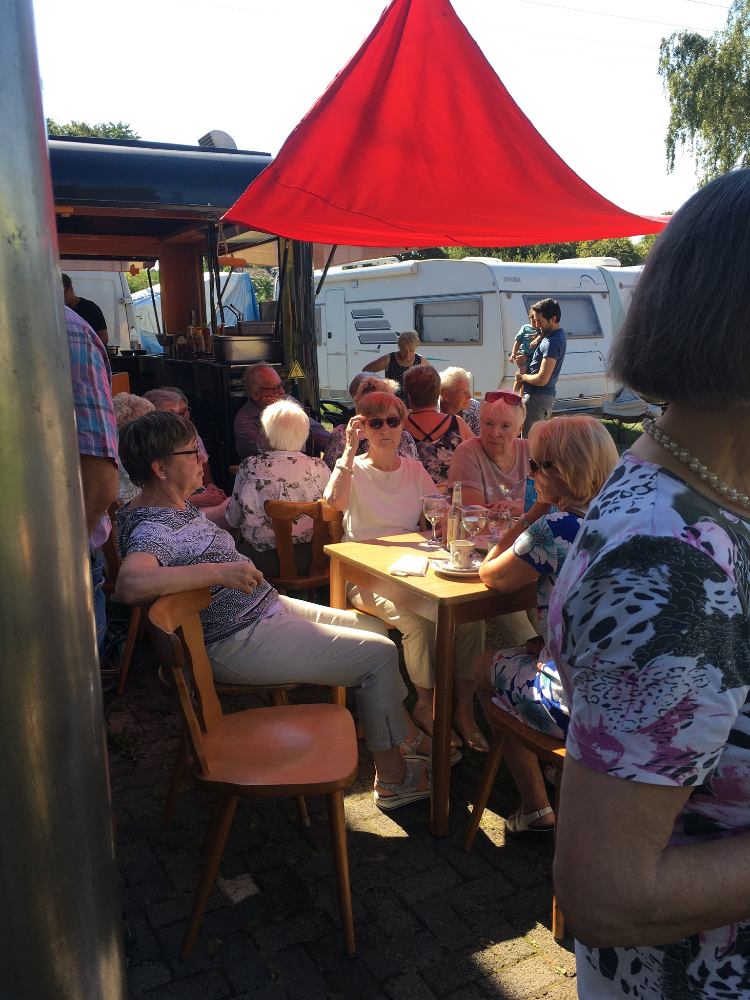

Unser Vereinsfest zum 10-jähriges Bestehen des TuS Köln Merkenich.
Am 13.8. haben wir mit euch unser erstes Sommerferst gefeiert. Wir
möchten uns nochmal ganz herzlich über eure Treue während der, für uns
alle, schwierigen Corona-Zeit bedanken. Ohne euch wären wir nicht! Im
Namen des Vorstands möchten wir uns für diesen schönen (wenn auch heißen)
Tag bedanken und hoffen es hat euch auch gefallen. Hier findet ihr noch
ein paar schöne Bilder vom Tag.
Es war ein schönes Fest mit
euch! Auf die nächsten 10 Jahre! der Vorstand.
1 / 11

Unser erster Vorsitzender, Hansjörg Schneider, eröffnet das Vereinsfest 2022.
2 / 11

Unsere Hüpfburg wurde durch die hohen Temperaturen leider
wenig genutzt.
3 / 11

Die große Hitze hat auch dazu geführt, dass Familien mit Kindern
am Anfang nicht stark vertreten waren.
4 / 11

Herr Bruno Klais vom Bürgerverein Merkenich folgte unserer
Einladung, bedankte sich für die gemeinsame gute Arbeit und stand den Besuchern
für Fragen zur Verfügung.
5 / 11

Die Mitglieder der Damengymnastik und der Wandersparte waren
reichlich vertreten und genossen das Beisammensein.
6 / 11

Die angebotenen Speisen und Getränke kamen gut an.
7 / 11
Die Merkenicher freiwillige Feuerweher kam mit einem großen Fahrzeug vorbei und gab Interessierten ausführliche Erklärungen.
8 / 11

Der TuS Merkenich bedankt sich herzlichst.
9 / 11

Unsere besonderer Dank gilt Herrn Günther Paffenholz, der
mit seinen stolzen 93 Jahren mit uns gefeiert hat.
10 / 11

Für unsere Kleinsten wurden Spiele angeboten, die trotz
der Hitze gut angenommen wurden.
11 / 11

Bis zum späten Nachmittag wurde auch bei Kaffee und Kuchen fröhlich diskutiert.
Wir bieten Breitensport in familiärer Atmosphäre für junge und jung
gebliebene ältere Mitbürger. Wir verbinden so unterschiedliche Sportarten
wie Gymnastik, Wandern und Segeln und bringen so auch unsere Mitglieder
zusammen. Koorperationsverträge mit der Stadt Köln spiegeln die
Verbundenheit mit unserem Stadtteil wider. Unsere soziale Verantwortung
beweisen wir mit niedrigen Beiträgen bei gleichzeitig gesunden Bilanzen.
Vorstellung Verein
Unser Verein wurde im Jahr 2009 gegründet um den Sparten Gymnastik,
Segeln und Wandern, die sich aus der Organisation des SV-Köln-Merkenich
1921 e.V. lösen wollten eine neue sportliche Heimat zu bieten. Aus
organisatorischen Gründen konnten wir jedoch erst am 1. Januar 2010 mit
dem Sportbetrieb beginnen. Heute verfügt der TuS Köln-Merkenich über
circa 150 aktive Mitglieder. Wir fühlen uns besonders der Förderung der
Jugend verpflichtet, auch die Integration anderer Nationalitäten liegt
uns am Herzen. Selbstverständlich versuchen wir auch junge und
junggebliebene Menschen mit Angeboten in unserem Verein zusammen
zubringen.
Sparten
Der TuS Köln Merkenich deckt mit den Abteilungen Gynmastik und Wandern
große Gebiete des Breitensportes ab. Mit der Segelabteilung sind wir aber
auch in einem hochspezialisierten Sportbereich vertreten.
Unsere Gynmanstiksparte widmet sich hauptsächlich dem Frauen- und
Jugendturnen, während Wandern allen Altersgruppen die Möglichkeit bietet
in Gemeinschaft die Natur zu Fuß und damit hautnah zu erleben. Segeln
wiederum eröffnet dem interessierten Wassersportler große Möglichkeiten
Teamgeist zu erleben.
Darüber hinaus kommt aber auch die Geselligkeit nicht zu kurz. So treffen
sich die Mitglieder der Sparte Wandern jährlich im Sommer zu einem
Grillnachmittag und im Dezember im Rahmen der Spartenversammling zu einer
Advents- bzw. Weihnachtsfeier.
Um das Budget zu entlasten wird bei den Seglern auch das gemeinsame
Arbeiten an den Booten im Frühjahr und das winterfest machen im Herbst
als Arbeitsbeitrag verlangt. Bei diesen Arbeitenseinsätzen wird jeder
nach seinen Fähigkeiten eingeteilt. Anstrich des Unterwasserschiffes mit
Antifouling oder Polieren der Bordwände oder Reinigen des Innenbereiches
oder Ölwechsel am Dieselmoter... es gibt immer viel zu tun. Aber
geselliges Segeln mit Freunden oder anderen Seglern sind der Lohn für
diese alljährlichen Einsätze. Zum Jahresabschluss wird ein gemeinsamer
Abend mit Essen, Trinken und natürlich Erfahrungsaustausch, wie unter
Seglern üblich, organisiert.